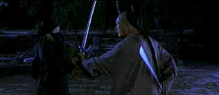

| Crouching
Tiger, Hidden Dragon (SE) /B+, B+ |
| Columbia/2000/120/ANA 2.35 |
What's all this noise about a Hong Kong martial arts flick? Aficionados
of the genre have long appreciated the acrobatic flying sword fights and martial arts displays, but
by bringing, in especially artful fashion, to a mainstream audience, director Ang Lee does indeed
fly with Crouching Tiger, Hidden Dragon.
The story is simplistic enough. Legendary swordsman Li Mu-Bi decides its time to
re-evaluate his life and gives his famed sword Green Dragon to trusted friend and wise
politician Sir Te. Fellow warrior and would-be lover Yu Shu Lien delivers the sword for Li.
When a powerful governor visits, the sword disappears from it's place of honor in Sir Te's
sanctuary. Yu Shu Lien uses her martial arts and feminine wiles to recover the sword, but it takes
Li, returning from a visit to his master's grave, to recover the prized weapon. Jen, the
governor's daughter, only has eyes for the weapon and setting out on life of road warrior. Shady
Jade Fox, a rogue warrior who poisoned Li Mu-Bai's master, has influenced Jen to the point of
confusion and Lo, a desert bandit in love with Jen wants her to spend the rest of her life under
the stark sun of his home. The big questions are: will Jen run away with Lo; can Li Mu-Bai
revenge his master's murder; will Yu Shu Lien and Li Mu-Bai lived happily ever after.
 |
| Clashing swords, smoldering egos.
©Columbia |
I don't think the story-telling is what makes Crouching Tiger, Hidden
Dragon special, but rather the execution of director Ang Lee. Lee is more restrained than the
typical director of a Chinese sword-fighting epic adventure. Ang focuses on the poetry of the
fighting, the elements of romance and ties it all together with splendid production design and
simply exquisite cinematography. The score features Kodo-like drum riffs accompanying the more
beautiful fights. They actually are choreographed more like dances than screen fights. Yuen Wo-Ping.
who is responsible for many fine Chinese action movie choreography and also did The Matrix,
delivers the goods for director Lee. Tan Yun music moves between romance and action effortlessly.
Peter Pau's photography is often breathtaking. And Tim Yip's production design seals the success of
the package.
Chow Yun-Fat wields his sword with confidence as Li Mu-Bai. Chow's brisk charm
is kept under wraps as he plays Li with a straight-laced dignity. Michelle Yeoh is a trifle too
dour as Yu Shu Lien for my taste. Zhang Ziyi is very appealing as Jen and Chang Chen provides some
lusty romantic impulses as Lo.
Crouching Tiger, Hidden Dragon graces DVD with its extraordinary
beauty. There's a hint of enhancement going on that keeps the DVD from achieving reference levels.
It's not obvious, happily, but it creates a faint hint of excess information in the picture.
Overall, the picture is very sharp and there is an outstanding sense of dimension. Colors are rich;
perhaps red tends very slightly toward orange. The night segments are lustrous, but might have been
slightly more punchy. Still, shadow detail is clear and mood is maintained. The Dolby Digital 5:1
Mandarin track is encoded with excellent space and ambient detail. The drums have tight, quick
impact. Removable yellow English subtitles are easy to read and well set over the image. The more
delicate sounds hang int he air. The menu animated menu screens may be fun, but it means slower
set-up navigation.
Columbia has packaged Crouching Tiger, Hidden Dragon as a special edition
featuring audio commentary from director Ang Lee and writer James Schamus. A making of special from
Bravo, Unleashing the Dragon, looks behind the production, and an video interview with Michelle
Yeoh completes the heart of the presentation.
|
|
|
|

Selections from the Feature Archive include articles on
Akira Kurosawa, Frank
Darabont, Blonde Bimbos, Hollywood Street Gangs, or Vietnam: The
Hollywood Pariah, and many more....

Click on the image above for as original view of Akira Kurosawa's work

The
Movie Poster Archive include extensive poster images from the films of stars like Susan Hayward,
Kirk Douglas, Katharine Hepburn and many more. Our featured star is Clark Gable.

Jou Du/A,B-

A sexy Chinese noir. Bold colors paint stirring emotions in a small
provincial town.

 Gary Morris's insightful publication Bright Lights
Film Journal turns the celluloid in films from a unique perspective. Click on the image above
for more pure movie views. Gary Morris's insightful publication Bright Lights
Film Journal turns the celluloid in films from a unique perspective. Click on the image above
for more pure movie views.
DVDRAMA
One of France's outstanding DVD resources. Par le vous DVD?
Umberto Passini Online

Vintage & Contemporary Film Poster Art. Umberto has developed a fine Internet
reputation as reliable and honest. Nice posters too!

Now a major independent DVD distributor, Image has parlayed its laser disc business
to success. Great DVD release calendar info.
Avid-Collector Posters

Great selection of big foreign paper, plus the home of J. Fields linen
service.
|